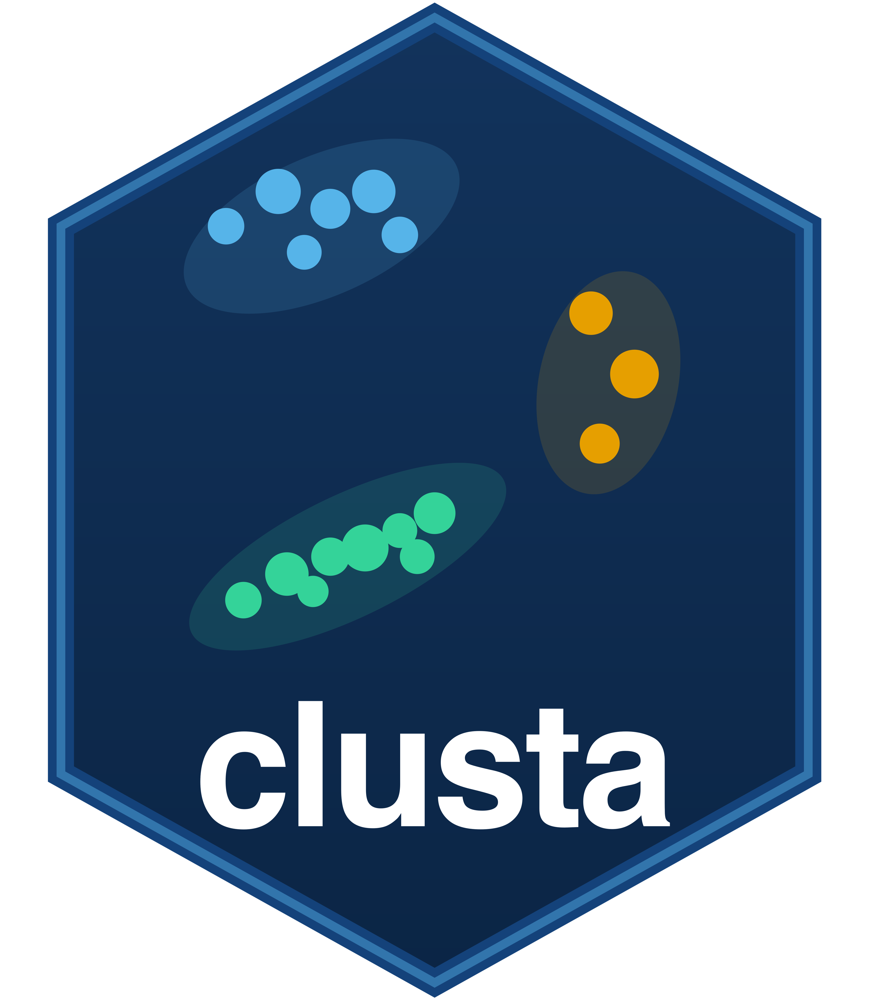

clusta
Spectral, Distribution-Aware and Dynamic-Programming Clustering in R

clusta
Most clustering methods fail on non-convex shapes. Two interleaved crescents, concentric rings, or three spirals will confuse k-means because it partitions space with straight cuts. clusta is built around S-MPDP (Spectral Mathematical Programming Dynamic Programming), a method that first unfolds the data into a one-dimensional signal using a spectral graph, then finds cluster boundaries on that signal with an exact dynamic program.
Beyond S-MPDP, clusta also provides globally optimal one-dimensional clustering, exact solutions for two-variable problems, projection-based methods for higher dimensions, and sequence or graph-constrained clustering. One consistent interface covers all of them.
Quick Start
library(clusta)
# one variable: globally optimal partition
x <- c(rnorm(60, 0), rnorm(60, 6), rnorm(60, 13))
cl <- clusta(x, k = 3)
print(cl)
plot(cl)
# two moons: non-convex, use S-MPDP
d <- gen_two_moons()
cl <- clusta(d[, c("x", "y")], k = 2, method = "spectral")
plot(cl)
# iris: multivariate, project to PC1 then exact DP
cl <- clusta(iris[, 1:4], k = 3, method = "projection")Nine Clustering Methods
clusta picks a sensible default based on the data (one variable gives "wcss", multiple variables give "projection"), or you can set method explicitly.
wcss
Globally optimal contiguous partition of one variable by minimising within-cluster sum of squares. Returns a certified gap of 0%.
projection
Projects to the first principal component (or a custom direction) then runs the exact 1-D DP on the score. Exact on the projection axis.
estvar
Exact DP using an estimation-variance criterion. The Neyman objective (sum of Wh*Sh) is globally optimal. Also supports Gaussian and WCSS objectives.
parametric
Fits the best parametric distribution by AIC, then places boundaries with a DP on the model's Wh*Sh cost. Optionally uses FitVerse for 52 families.
spectral
S-MPDP. Builds a k-NN graph, unfolds the data to a 1-D signal via the normalised Laplacian, then runs the distribution-fitting DP. Handles non-convex shapes.
exact2d
Exactly two variables, k = 2. Enumerates all separating directions and returns the certified global optimum in full 2-D space.
sweep
Two variables, any k. Global for k = 2; best clustering separable by parallel lines for k >= 3. Report the optimality gap to assess quality.
sequence
Ordered data (time series, spatial transects, trajectories). Exact multivariate segment DP along the given order.
graph
Contiguity-constrained clustering on a neighbourhood graph using minimum spanning tree and greedy edge removal. Respects spatial adjacency.
S-MPDP: The Flagship Method
Standard spectral clustering runs k-means on the eigenvectors of a graph Laplacian. S-MPDP replaces that k-means step with a dynamic program, which means it finds boundaries on the spectral signal exactly rather than approximately.
The algorithm has two stages. Stage 1 builds a mutual k-nearest-neighbour graph and computes the normalised Laplacian. The leading eigenvectors unfold the local neighbourhood structure into a one-dimensional score. Stage 2 fits the best parametric distribution to that score by AIC and places boundaries with an exact DP. The distribution fitting step lets the DP account for the shape of the signal rather than treating it as uniform.
# dedicated interface with full control
cl <- spectral_mpdp(d[, c("x", "y")], k = 2, k_neighbors = 15)
# or through clusta()
cl <- clusta(d[, c("x", "y")], k = 2, method = "spectral", k_neighbors = 15)Set fit_engine = "fitverse" in method = "parametric" to search all 52 distribution families rather than the default five. Set fit_engine = "best" to run both engines and keep whichever gives lower empirical Wh*Sh.
cl <- clusta(x, k = 3, method = "parametric", fit_engine = "fitverse")Choosing k
Eigengap method
The Stage 1 graph is already built during clustering, so reading its Laplacian spectrum is cheap. A clear gap between consecutive eigenvalues points at the number of clusters in the data.
sk <- suggest_k(d[, c("x", "y")], k_neighbors = 15, k_max = 8)
sk # prints the suggested k and the gap sizes
plot(sk) # eigenvalue spectrum with gap highlightedElbow scan
clusta_elbow() runs clusta() for a range of k values and plots WCSS, BIC, and silhouette side by side.
x <- c(rnorm(80, 0), rnorm(80, 6), rnorm(80, 13))
clusta_elbow(x, k_range = 1:8)Both are second opinions. A clear isolated gap from suggest_k() and an elbow from clusta_elbow() agreeing on the same k is a good sign.
Bootstrap Stability
After clustering, cluster_stability() checks whether the clusters would reappear in a fresh sample. It resamples the data with replacement, re-runs the full S-MPDP pipeline on each resample, and measures the Jaccard overlap between original and resample clusters.
stab <- cluster_stability(d[, c("x", "y")], h = 2,
k_neighbors = 15, B = 50, seed = 42)
print(stab)
plot(stab)A common reading of the per-cluster mean Jaccard score:
above 0.85 — highly stable 0.75 to 0.85 — stable 0.60 to 0.75 — doubtful below 0.60 — likely an artefactTreat a cluster scoring below 0.60 as a feature of this particular sample rather than a real structure in the population.
Sensitivity Analysis
smpdp_sensitivity() evaluates combinations of neighbourhood size and cluster count, reporting quality metrics for each combination. Useful when you are unsure about k_neighbors.
sens <- smpdp_sensitivity(d[, c("x", "y")],
k_vec = 2:4,
kn_vec = c(10, 15, 20, 30),
B_stab = 10)
print(sens)
plot(sens)Evaluation Metrics
cluster_metrics() computes a comprehensive set of internal and external validity scores for any clustering result.
data(ceramic)
X <- ceramic[, setdiff(names(ceramic), "class")]
cl <- clusta(X, k = 3, method = "spectral", k_neighbors = 41)
cluster_metrics(cl, true_labels = ceramic$class)| Metric | What it measures |
|---|---|
| ARI | Agreement with ground-truth labels (adjusted for chance) |
| NMI | Normalised mutual information with ground-truth labels |
| Silhouette | Cohesion vs separation without ground truth |
| Purity | Majority-class proportion per cluster |
| Calinski-Harabasz | Between-to-within variance ratio |
| Davies-Bouldin | Average ratio of within-to-between spread |
| Dunn | Minimum inter-cluster distance / maximum intra-cluster diameter |
Benchmarking
run_clustering_benchmarks() compares S-MPDP against k-means, spectral clustering (from the cluster package), HDBSCAN, and agglomerative clustering across several datasets.
bm <- run_clustering_benchmarks(datasets = "all", metrics = "all")
print(bm)friedman_ranks() summarises the comparison with Friedman rank scores, one row per method, one column per metric.
Bundled Datasets
Six real datasets are bundled with the package. Each has numeric feature columns and a class factor for validation.
glass
214 glass fragments, 9 oxide predictors, 6 glass types.
breast_cancer
569 tumour measurements, 30 features, benign vs malignant.
raisin
900 raisin samples, 7 morphological features, 2 varieties.
rice
3810 rice samples, 7 shape features, 2 varieties.
ceramic
88 ceramic fragments, chemical composition, archaeological classification.
smpdp_toy
Small synthetic dataset for quick demos and testing.
Six synthetic shape generators are also included for experimenting with non-convex structures.
d <- gen_two_moons(n = 500)
cl <- clusta(d[, c("x","y")], k = 2, method = "spectral")
plot(cl)Two interleaved crescent shapes. k-means fails; S-MPDP finds the correct boundary.
d <- gen_concentric_circles(n = 2000)
cl <- clusta(d[, c("x","y")], k = 2, method = "spectral")
plot(cl)Inner and outer rings. A textbook failure case for any linear or convex method.
d <- gen_three_spirals(n = 1200, cycles = 1.4)
cl <- clusta(d[, c("x","y")], k = 3, method = "spectral")
plot(cl)Three interleaved arms. Tests the graph unfolding under high curvature.
d <- gen_smiley(n = 400)
cl <- clusta(d[, c("x","y")], k = 3, method = "spectral")
plot(cl)A smile arc and two eyes. Three clusters with very different densities.
d <- gen_v_shape(n = 400)
cl <- clusta(d[, c("x","y")], k = 2, method = "spectral")
plot(cl)Two arms of a V. Non-convex but less extreme than spirals.
d <- gen_cassini(n = 2000)
cl <- clusta(d[, c("x","y")], k = 3, method = "spectral")
plot(cl)Two outer banana-shaped bands and a central disc. Uses the mlbench generator when installed.
Visualisation
plot(cl) # base graphics
fviz_clusta(cl) # ggplot2 versionScatter plot coloured by cluster assignment. For one-variable results, shows the density with boundaries marked.
plot(cl, type = "signal")The 1-D spectral signal used by S-MPDP, with fitted density and cluster boundaries overlaid.
plot(cl, type = "confidence")Per-observation assignment confidence, based on distance to the nearest boundary in signal space.
sk <- suggest_k(X)
plot(sk)Laplacian eigenvalue spectrum with the largest gap highlighted.
plot(cl, type = "similarity")The kNN similarity matrix, reordered by cluster. Block structure confirms cluster quality.
S3 Methods
print(cl) cluster sizes, centres, WCSS, BIC, silhouette, optimality gapsummary(cl) per-cluster table with size, proportion, within-SS, silhouette widthplot(cl) cluster plot (base graphics)autoplot(cl) cluster plot (ggplot2)fitted(cl) centre coordinates for each observationpredict(cl, newdata) assign new points to the nearest cluster centrefviz_clusta(cl) ggplot2 visualisation with confidence shading
Optimality Gap
For the exact one-dimensional methods and exact2d, clusta certifies how close the solution is to the global optimum.
cl$gap_pct # certified upper bound on distance from global (0 = provably global)
cl$lower_bound # Cauchy-Schwarz lower bound on WCSSA gap of 0% means the solution is certifiably the best possible. For spectral and parametric methods the objective is not WCSS, so the gap is not reported.
Shiny App
install.packages(c("shiny", "bslib", "DT", "ggplot2")) # once
clustaApp()The bundled app covers the full workflow: upload data or pick a built-in dataset, choose the method and k, view cluster plots, signal plots, eigengap, stability results, and a benchmark comparison. No code needed.
Who Is clusta For?
🔬 Applied Researchers
Any domain with non-convex or ring-like cluster structures. The spectral method works where k-means does not.
📊 Survey and Social Science
The estvar method with the Neyman objective clusters in a way that directly minimises survey estimation variance.
🌍 Spatial Analysis
The graph method respects spatial adjacency constraints, so neighbouring units stay in the same cluster.
📈 Time Series
The sequence method segments ordered data into contiguous groups along a known ordering.
🎓 Teaching
The Shiny app and shape generators make it easy to show students why k-means fails on non-convex data.
Quick Reference
| Function | Purpose |
|---|---|
clusta(data, k) |
Cluster using the selected method |
spectral_mpdp(data, k) |
S-MPDP with full control over parameters |
mpdp(x, k) |
Distribution-aware DP on one variable |
suggest_k(data) |
Eigengap estimate of the number of clusters |
clusta_elbow(data) |
WCSS / BIC / silhouette scan over k |
cluster_stability(data, h, B) |
Bootstrap Jaccard stability |
smpdp_sensitivity(data) |
Sensitivity over k and k_neighbors |
cluster_metrics(cl, true_labels) |
ARI, NMI, silhouette, purity, and more |
run_clustering_benchmarks() |
Compare S-MPDP vs k-means / spectral / HDBSCAN |
friedman_ranks(bm) |
Friedman rank summary across methods |
clusta_compare(data, k) |
Side-by-side comparison with k-means |
fviz_clusta(cl) |
ggplot2 cluster figure |
clustaApp() |
Launch interactive Shiny app |
Citation
citation("clusta")Reddy, K. G., Bulivou, G., & Khan, M. G. M. (2026). clusta: Spectral, Distribution-Aware and Dynamic-Programming Clustering. R package version 1.0-1. https://cran.r-project.org/package=clusta
clusta is on CRAN: https://cran.r-project.org/package=clusta A companion paper describing the S-MPDP method and benchmarks is in preparation. We would love to hear how you are using it.